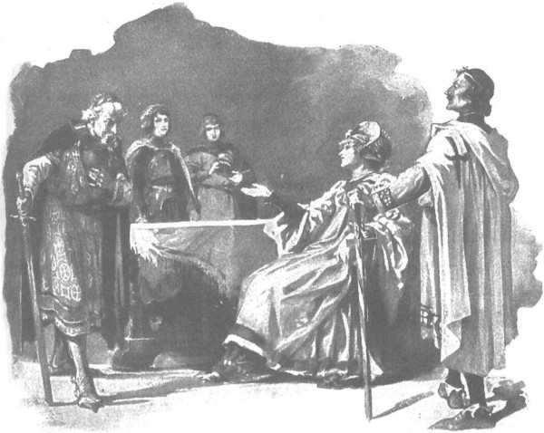
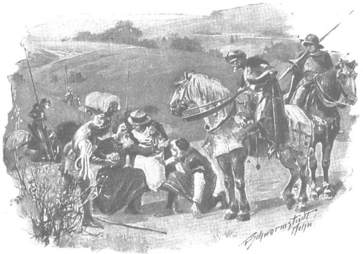

Sau đêm mù sương, một ngày đầy gió nhẹ nhàng đến, thỉnh thoảng trời mới lóe sáng, rồi lại sầm xuống do những đám mây đang bị gió xua đuổi như những đàn thú phi nước đại trên trời. Ông Maćko lệnh cho đoàn lên đường lúc rạng đông. Người thợ kiếm nhựa cây làm nhiệm vụ dẫn đường tới Budy khẳng định rằng ngựa thì có thể đi suốt con đường, nhưng xe thì đôi chỗ phải dỡ đồ đạc xuống và chuyển tay một phần, cùng với quần áo và lương thực dự trữ. Họ phải mất nhiều thời gian và vất vả mới có thể tới nơi, nhưng những con người cương nghị và quen với gian lao muốn đương đầu sự gian khó lớn lao hơn là nghỉ ngơi biếng nhác trong cái tửu quán trống rỗng, vì vậy họ hăng hái lên đường. Ngay cả gã Wit vốn hay e sợ, nhưng được động viên và có sự hiện diện của ông thợ kiếm nhựa cây, nên cũng không còn tỏ ra sợ hãi.
Vừa ra khỏi quán trọ, họ đi vào một khu rừng cây thân cao vút, trơ trụi ít lá cành, nơi phải thật khéo léo điều khiển ngựa thì mới có thể đi quanh quéo giữa những thân cây lá kim cổ thụ mà không phải tháo xe ra. Gió khi thì ngừng lại, khi lại giật lên với sức mạnh khủng khiếp, như những đôi cánh khổng lồ đập mạnh vào các cành cây thông trần trụi, uốn cong chúng, vặn xoắn chúng, vung vẩy chúng như những cánh quạt cối xay gió, rồi bẻ gãy chúng. Rừng gập mình dưới cái hơi thở tàn bạo đó không thôi gầm gào và réo rít thậm chí trong khoảng thời gian giữa hai đợt gió, như thể giận dữ trước sự tấn công bạo liệt ấy. Thỉnh thoảng, những đám mây đen che khuất hoàn toàn ánh sáng ban ngày; mưa phùn gieo muôn hạt trộn lẫn với những bông tuyết to, khiến trời đất tối sầm, như thể đã đến buổi hoàng hôn tối mịt. Gã Wit lại mất tinh thần một lần nữa và kêu lên rằng “lũ ma ác lại điên cuồng gây cản trở”, nhưng không có ai nghe gã, thậm chí cô gái Anulka nhút nhát cũng không thèm chấp lời nói của gã, nhất là khi có chàng trai Séc sát cánh bên cạnh, cô có thể chạm bàn đạp mình vào bàn đạp của chàng, và ngắm nhìn anh chàng đang có vẻ mạnh bạo như thể dám thách đấu cả với ma quỷ.
Sau khu rừng cây cao, bắt đầu là rừng cây cành lá rậm, tiếp đó là những bụi cây rậm rạp không thể đi qua. Đến đây cần phải tháo xe ra, nhưng họ làm việc đó rất thành thạo và chỉ trong chớp mắt. Đám đầy tớ vạm vỡ chuyển trên vai của mình bánh xe, trục và mui xe, cũng như hành lý và nguồn thực phẩm. Đường xấu như vậy kéo dài chừng ba chặng ngựa, nên mãi đến gần tối họ mới tới được Budy, nơi mà đám thợ kiếm nhựa cây đón tiếp họ hậu hĩ và cam đoan rằng cứ đi theo Lũng Quỷ, hay chính xác hơn là đi dọc theo nó, là có thể đến được thị trấn. Những người này quen sống nơi rừng thẳm, hiếm khi thấy được bánh mì và bột, nhưng không hề bị đói, vì họ có sẵn lắm loại thịt, đặc biệt là cá chình hun khói, loại cá rất nhiều ở vùng đầm lầy nơi đây. Họ đãi đoàn rất hào phóng, đồng thời chìa tay háo hức đón lấy những chiếc bánh mì. Trong số họ có cả phụ nữ và trẻ em, tất cả đều đen kịt vì khói đẫm nhựa cây, và một người đàn ông già nua, hơn trăm tuổi, vẫn còn nhớ vụ các hiệp sĩ Thánh chiến tàn sát Lęczyca hồi năm 1331, phá hủy hoàn toàn thành phố. Ông Maćko, chàng trai Séc và hai cô gái, mặc dù đã nghe câu chuyện này trước đây ở Sieradz, vẫn rất chăm chú lắng nghe ông lão. Lão ngồi bên lò sưởi đang cời lửa, dường như đào bới lại những ký ức khủng khiếp thời tuổi trẻ của mình. Phải! Ở Lęczyca, cũng như ở Sieradz, bọn chúng không tha cho cả nhà thờ lẫn các vị linh mục, máu của người già, phụ nữ và trẻ em đã chảy tràn theo kiếm đao của bọn chinh phục. Bọn hiệp sĩ Thánh chiến, lại vẫn luôn là bọn hiệp sĩ ấy! Ông Maćko và Jagienka cứ nghĩ mãi về Zbyszko, người chắc đang ở trong hàm nanh chó sói, ở giữa bọn người thù nghịch, không hề biết xót thương ai, cũng chẳng tôn trọng luật lệ nào. Sieciechówna cũng suýt xỉu vì sợ, biết đâu trong cuộc đuổi theo cha tu viện trưởng chẳng may họ lại rơi vào tay bọn người ác độc đó…
Rồi cụ già bắt đầu kể về trận chiến gần Plowce [206] , cuộc chiến đã chấm dứt cuộc xâm lăng của bọn hiệp sĩ Thánh chiến, ở trận đó, với một lưỡi hái sắt trong tay, ông đã làm bộ sĩ trong đội dân binh. Trong trận chiến ấy, gần như toàn bộ trai tráng của dòng họ Mưa Đá đã ngã xuống, nên ông Maćko thuộc lòng mọi chi tiết, nhưng bây giờ ông vẫn chăm chú lắng nghe cụ kể như một câu chuyện mới về vụ tàn diệt khủng khiếp bọn Đức, bọn chúng nằm như ngả rạ dưới trận cuồng phong những lưỡi kiếm của giới hiệp sĩ Ba Lan và sự hùng mạnh của đức vua Lokietek…
- Hà! Bây giờ tôi vẫn nhớ. - Cụ già nói. - Chúng tràn tới vùng đất này, thiêu trụi cả thành quách lẫn lâu đài, giết cả bọn trẻ còn nằm nôi, nhưng rốt cuộc bọn chúng lại có cái kết cục đen kịt. Hey! Cuộc chiến ra chiến! A! Cứ nhắm mắt là tôi lại nhìn thấy quang cảnh cái chiến trường ấy…
Rồi cụ nhắm nghiền mắt lại im lặng, thi thoảng cời nhẹ than trong bếp, mãi đến khi Jagienka sốt ruột muốn nghe tiếp câu chuyện, cất tiếng hỏi:
- Rồi sao nữa ạ?
- Sao nữa à? - Cụ già lặp lại. - Tôi vẫn nhớ rõ cái cánh đồng ấy như thể bây giờ nó đang bày ra trước mắt: bên này là những bụi cây rậm rạp, còn bên phải là cánh đồng sũng nước và những ruộng lúa đã gặt Thế mà sau cuộc chiến không còn lấy một bụi cây nào nữa, không còn đất ướt, không còn lúa má, rải rác khắp mọi nơi chỉ toàn là kiếm, rìu, giáo mác, cùng những bộ giáp phục sang trọng, cái nọ chồng lên cái kia, như che phủ toàn bộ mảnh đất thiêng… Chưa bao giờ tôi thấy nhiều người chết chất chồng nhau đến thế, chưa bao giờ tôi thấy máu người chảy tràn ra nhiều đến thế…
Trái tim ông Maćko lại rộn lên bởi những hồi ức ấy, ông thốt lên:
- Phải! Lạy Đức Chúa Giêsu lòng lành! Cũng tệ hại như hỏa tai hay dịch hạch, hồi đó bọn chúng cố đánh chiếm vương quốc ta. Không chỉ Sieradz và Lęczyca, mà bọn chúng đã tàn phá nhiều thành phố khác. Rồi sao? Đất nước chúng ta vẫn sống kiên cường, sức mạnh trong ta không hề bị khuất phục. Ta đã tóm lấy cổ bọn chó Thánh chiến ấy, siết cổ chúng không buông ra và nện cho chúng gãy răng… Cứ hãy nhìn xem: đức vua Kazimierz đã tái thiết cả Sieradz lẫn Lęczyca rất đỗi tuyệt vời, hoành tráng hơn cả ngày trước, đã triệu tập họp Hội đồng Quý tộc cả vùng để thông qua các định ước theo phương cách cũ. Còn đám Thánh chiến mà cụ đã từng chém ở Plowce, cứ nằm đó mà thối rữa. Cầu Chúa sẽ cho một kết cục như thế nữa!
Nghe thấy thế, cụ ông thoạt tiên gật gù như thể tán đồng, rồi sau đó nói:
- Thực ra chúng đâu có nằm đấy để mà bị thối rữa. Sau cuộc chiến, đức vua lệnh cho bọn tôi đào những hố sâu, nông dân trong vùng cũng kéo đến đông lắm để giúp sức lo công việc, tiếng cuốc xẻng vang động đất trời. Chúng tôi đặt bọn Đức xuống hố rồi chôn cất cẩn thận, để tránh bệnh hoạn lan ra từ thây ma bọn chúng, mà rốt cuộc chúng cũng chẳng còn được nằm yên ở đấy nữa kia.
- Sao không còn ở đấy? Thế chúng bị làm sao?
- Tôi thì không thấy chuyện đó, tôi chỉ kể lại những gì mọi người nói thôi. Sau trận chiến, có một chuyện kinh khủng, kéo dài những mười hai tuần lễ liền, nhưng chỉ toàn diễn ra vào ban đêm. Ban ngày mặt trời chiếu sáng chẳng ai thấy gì, nhưng về đêm gió to đến nỗi chẳng sợi tóc nào trên đầu không bị giằng đứt. Cả một bầy quỷ sứ quay cuồng trong gió lốc, mỗi con cầm một cái chàng nạng, bay tới nơi con nào cũng xọc ngay xuống đất, xóc lên xác một hiệp sĩ Thánh chiến, rồi đem xuống địa ngục. Dân chúng ở Plowce nghe như có tiếng cả đàn chó cùng đồng thanh tru lên, họ không biết đó là tiếng bọn Đức rú lên vì sợ hãi và ân hận, hay dám quỷ sứ đang vui sướng reo cười. Chuyện ấy tiếp diễn cho đến khi cha linh mục làm lễ thánh trên các hố chôn người, đến khi sang năm mới đất đông cứng, khiến chàng nạng không xỉa được xuống đất.
Rồi cụ nín lặng, một lúc sau lại nói thêm:
- Cầu Chúa ban cho, thưa hiệp sĩ, cái kết cục như ngài nói, vì dù tôi không sống được tới ngày đó nhưng những trai tráng như hai vị đây sẽ sống đến ngày thấy những gì mắt tôi đã từng trông thấy.
Sau đó, cụ lúc thì chăm chú ngắm Jagienka, lúc lại nhìn Sieciechówna, ngạc nhiên trước vẻ mặt kiều diễm của họ, và cụ lúc lắc đầu.
- Hệt như hoa anh túc ngoài đồng. - Cụ thớt lên. - Mắt tôi chưa từng thấy người nào đẹp thế này.
Họ tiếp tục chuyện trò như thế suốt một phần đêm, sau đó ngả lưng ngủ trong nhà trên lượt rêu mềm như lông vũ, đắp những tấm da ấm áp. Và khi giấc ngủ say sưa đã giúp cho tứ chi hồi phục, ngay từ sáng sớm tinh mơ hôm sau họ lại tiếp tục lên đường. Con đường chạy dọc theo khe núi quả thực không dễ đi, nhưng cũng không quá khó, vì vậy trước khi mặt trời lặn họ đã nhìn thấy lâu đài Lęczyca. Thành phố đã được tái dựng lên từ đống tro tàn, một phần xây bằng gạch đỏ, phần bằng đá. Những bức tường cao, tháp phòng thủ, các ngôi nhà thờ còn đẹp hơn cả ở Sieradz. Gặp các giáo sĩ dòng Dominikan, họ biết tin về cha tu viện trưởng. Cha đã đến đây, bảo rằng thấy khỏe hơn, cha vui với hy vọng sẽ khỏe hẳn, rồi tiếp tục lên đường từ một vài ngày trước.
Ông Maćko không hy vọng sẽ đuổi kịp cha trên đường, mà quyết định đưa hai thiếu nữ đến tận Plock, ở đấy thể nào cũng gặp được cha, nhưng ông nóng ruột được gặp Zbyszko hơn, nên ông bối rối với một cái tin khác. Ấy là sau khi cha lên đường, mực nước các con sông đã dâng cao đến độ người ta không thể vượt qua. Thấy vị hiệp sĩ đi với một đoàn tùy tùng lớn, lại nghe ông nói là đang trên đường đến chỗ quận công Ziemowit, nên các tu sĩ dòng Dominikan đón tiếp và đối đãi họ rất tử tế, thậm chí còn tặng ông Maćko một tấm bảng bằng gỗ ô liu, trên đó ghi lời cầu nguyện bằng tiếng La-tinh lên thiên sứ Raphael, vị thánh bảo trợ cho viễn khách đường trường.
Suốt hai tuần, họ phải kéo dài cuộc lưu trú bắt buộc tại Lęczyca, trong thời gian đó một gã hộ vệ của viên chỉ huy lâu đài đã phát hiện ra rằng hai tiểu đồng của vị hiệp sĩ là nữ, và gã liền mê mệt Jagienka. Vì thế chàng trai Séc định tỷ thí với gã trên sân đất nện, nhưng hôm sau đó là phải khởi hành rồi, nên ông Maćko ngăn cản, không để cho chàng manh động.
Khi họ tiếp tục lên đường đi Plock, gió đã làm khô bớt mặt đường, và tuy vẫn còn những cơn mưa phùn, nhưng đó chỉ là mưa tiết xuân ngắn ngủi. Những hạt nước mưa rất ấm và to, bởi xuân đã về tràn ngập. Trên cánh đồng lóng lánh những dải nước gợn sóng lăn tăn, gió mang về hương đất ướt nồng nàn. Đầm phủ đầy hoa cúc dại, trong rừng loại hoa lá gan đã nở, và ríu rít tiếng chim sẻ nhỏ hót vui rộn rã giữa lá cành. Trái tim của các viễn khách trào dâng những mong ước và hy vọng mới, nhất là khi đường đi thuận lợi và sau mười sáu ngày đường họ đã đến được cổng thành Plock.
Nhưng họ đến vào ban đêm, khi cổng thành đã đóng, vì vậy phải trú nhờ nhà một người thợ dệt ở bên ngoài thành. Đi ngủ muộn, sau những nhọc nhằn và bất tiện suốt hành trình dài, các cô thiếu nữ ngủ say như chết. Ông Maćko, người mà không khó khăn nào có thể hạ gục, không muốn đánh thức họ, nên ngay khi cổng thành mở, một mình ông vào thành, tìm đến nhà thờ và nhà của đức giám mục, nơi ông nghe được tin đầu tiên là cha tu viện trưởng vừa qua đời tuần trước.
Cha đã qua đời một tuần, nhưng theo phong tục thời ấy, người ta tổ chức lễ cầu nguyện bên áo quan và chịu tang trong sáu ngày, đám tang sẽ được cử hành hôm nay, tiếp theo là mặc niệm và lễ tưởng nhớ người đã khuất.
Quá buồn phiền, ông cũng chẳng buồn ngó quanh thành phố, vả chăng ông đã biết chút ít về nó trong lần mang thư của quận chúa Aleksandra đến cho đại thống lĩnh trước kia. Ông nhanh chân quay về nhà người thợ dệt ở ngoài tường thành, dọc đường ông băn khoăn tự nhủ:
- Thế là cha đã được yên nghỉ đời đời! Chẳng thể làm được gì hơn nữa rồi, nhưng bây giờ mình biết làm gì với các cô thiếu nữ ấy đây?
Ông suy nghĩ nên để các cô gái ở lại với quận chúa Aleksandra, quận chúa Anna Danuta, hoặc có thể mang theo về trang Spychow. Bởi vì trong khi đi đường, nhiều lúc ông nghĩ là nếu Danusia có mệnh hệ gì thì không có gì ngăn trở được Jagienka gần gũi Zbyszko. Ông chắc Zbyszko sẽ còn yêu thương, tiếc nuối và than khóc Danusia khá lâu nữa, vì nàng là người chàng quý trọng nhất trần đời, nhưng ông cũng không nghi ngờ gì việc được một thanh nữ như Jagienka luôn ở bên cạnh sẽ làm nên chuyện phải thành. Ông nhớ hồi Zbyszko còn là cậu bé, mặc dù trái tim lôi kéo đến với các khu rừng già, rừng non Mazowsze, nhưng cậu vẫn thích suốt ngày quanh quẩn cạnh Jagienka. Vì tin chắc Danusia không còn sống, ông nghĩ một khi cha tu viện trưởng đã quá cố thì không nên gửi Jagienka đi đâu cả. Và vốn tham lam đất đai, ông nghĩ ngay đến tài sản mà cha để lại. Quả là cha có giận và đã tuyên bố rằng không để cho họ chút gì hết, nhưng biết đâu trước khi qua đời cha chẳng nghĩ lại? Chuyện cha viết di chúc cho Jagienka thì là chắc chắn, bởi hồi ở Zgorzelice cha vẫn hay nói điều đó; vì vậy mà qua Jagienka, Zbyszko vẫn có thể được hưởng điền sản của cha.
Cũng có lúc ông Maćko định ở lại Plock để tìm hiểu cho kỹ hai, ba câu chuyện, và lo cho xong việc này, nhưng ông lại dẹp ngay ý nghĩ ấy. “Ta ở đây lo chạy chọt mong kiếm thêm tài sản,” ông nghĩ bụng, “trong khi thằng bé cháu ta lại đang mong chờ ta đến giải cứu nó khỏi tay bọn Thánh chiến.” Quả thật chỉ còn một cách: để Jagienka lại dưới sự chăm sóc của quận chúa và cha giám mục, khẩn cầu họ bảo vệ cô không bị ai làm hại, vì cha tu viện trưởng quá cố đã mong thế. Nhưng cách ấy cũng chẳng khiến ông Maćko hài lòng. “Dù sao con bé vẫn có của hồi môn lớn, nếu được thừa kế từ cha tu viện trưởng.” Ông tự nhủ. “Nếu có một gã nào đó xứ Mazury vớ được nó, thì nói có Chúa trên trời, con bé sẽ không thể giữ nổi, vì như mồ ma ông Zych đã nói, ngay từ hồi đó nó đã như bước trên than hồng.” Và lão hiệp sĩ e sợ ý nghĩ ấy, rằng nếu thế thì cả Danusia lẫn Jagienka đều bỏ Zbyszko, mà đó là điều ông không muốn nhất trên đời. “Chúa đã định cho thằng bé cô nào cũng được, nhưng một trong hai cô gái này thì nhất định nó phải có.”
Rốt cuộc, ông cũng quyết định là trước tiên phải cứu Zbyszko đã, còn nếu phải tạm xa Jagienka, thì tốt nhất sẽ để cô lại hoặc ở trang Spychow hoặc ở chỗ quận chúa Danuta, chứ không để ở thành Plock, nơi mà trong cung có không ít những hiệp sĩ tuyệt vời và xinh trai hơn.
Trĩu nặng những nghĩ suy ấy, ông rảo bước đi nhanh về nhà người thợ dệt để báo cho Jagienka biết tin cha tu viện trưởng qua đời, nhưng ông cũng tự hứa với mình rằng sẽ không báo ngay cho cô biết điều ấy, vì sợ cái tin xấu quá bất ngờ có thể khiến cô gái bị ngất xỉu và gây hậu họa làm cô không sinh nở được sau này. Về đến nhà, thấy cả hai cô gái đã quần áo chỉnh tề, thậm chí còn trang điểm và đang vui vẻ như chim chích, ông bèn ngồi xuống chiếc ghế đẩu nhỏ, bảo đám thợ học việc của ông thợ dệt mang ra cho ông một bát bia nóng, rồi cau mặt làm ra bộ nghiêm nghị, hỏi:
- Cháu có nghe thấy tiếng chuông trong thành không? Cháu có đoán được tại sao lại kéo chuông, hôm nay có phải Chúa nhật đâu, mà các cháu ngủ quá giờ cầu kinh sáng rồi. Cháu có muốn gặp cha tu viện trưởng không?
- Cháu muốn chứ! - Jagienka nói.
- Cháu không gặp cha được đâu.
- Cha đi mất rồi sao?
- Hẳn rồi, cha đã ra đi. Thế cháu không nghe người ta kéo chuông à?
- Cha mất rồi ư? - Jagienka kêu lên.
- Cháu phải nói là yên nghỉ đời đời.
Thế là cùng với Sieciechówna, cả hai bắt đầu đọc kinh yên nghỉ đời đời, hòa theo nhịp tiếng chuông. Lệ giàn giụa trên khuôn mặt của Jagienka, bởi vì cô thực sự yêu mến cha tu viện trưởng, người mặc dù hay nóng nảy với mọi người, nhưng không bao giờ làm hại ai, đôi bàn tay ông đã làm bao điều tốt; còn cô, con gái đỡ đầu của ông, được ông yêu thương như đứa con ruột thịt. Maćko nhớ rằng cha tu viện trưởng có họ với ông và Zbyszko, nên cũng động lòng và khóc một chút, rồi khi nước mắt đã cuốn trôi một phần buồn thương, ông bèn dẫn chàng trai Séc và hai cô gái đi dự tang lễ ở nhà thờ.
Lễ tang quả là trọng thể. Đích thân giám mục Jakub xứ Kurdwanów chủ trì, có mặt tất cả các linh mục và các tu sĩ thuộc giáo phận, tất cả các chuông đều gióng lên, người ta đọc những bài điếu văn mà không ai hiểu ngoài các giáo sĩ, bởi vì nội dung được viết bằng tiếng La-tinh, sau đó các giáo sĩ và giáo dân quay về nhà giám mục để dự một bữa tiệc thịnh soạn.
Ông Maćko cũng đi dự tiệc, mang theo cả hai gia nhân, vì là họ hàng của cha tu viện trưởng vừa quá cố và là người quen của giám mục nên ông được tham dự. Đức giám mục cũng nhiệt thành tiếp đãi thân nhân của người quá cố với sự biệt nhãn, nhưng ngay sau khi chào đón, ngài nói với ông:
- Ở đây, di chúc viết rằng những khu rừng dành cho dòng họ Mưa Đá trang Bogdaniec của ông, song những gì còn lại không thuộc về tu viện hay giáo xứ, mà dành tặng cho một cô cháu gái nào đó của cha tu viện trưởng, tên là Jagienka trang Zgorzelice.
Ông Maćko, người không hề mong đợi điều đó rất vui sướng vì các khu rừng, còn giám mục không nhận thấy rằng một trong những tiểu đồng của lão hiệp sĩ, khi nghe nhắc đến tên Jagienka trang Zgorzelice, liền ngước đôi mắt phủ sương xanh như màu thỉ xa cúc nhìn lên trời và nói:
- Chúa sẽ trả ơn người, nhưng con muốn cha còn sống hơn.
Nghe vậy, ông Maćko quay lại và giận dữ quát:
- Im đi, kẻo cháu sẽ xấu hổ đấy.
Nhưng đột nhiên ông ngừng lời, đôi mắt lóe lên ngạc nhiên, rồi mặt ông chợt trở nên đầy hận thù và dữ tợn, vì cách đấy không xa, bên cạnh cái cửa nơi quận chúa Aleksandra vừa bước vào, ông chợt trông thấy thân hình gã Kuno Lichtenstein đang gập người cúi chào theo phong thái cung đình đầy trang nhã, chính là gã hiệp sĩ Thánh chiến đã suýt giết chết Zbyszko ở Kraków.
Trong đời mình, Jagienka chưa bao giờ thấy ông Maćko như thế: khuôn mặt bị nhăn choắt lại như mõm một con chó dữ tợn, răng của ông lóe sáng trắng ởn dưới bộ ria mép, nhanh như chớp ông mở bung thắt lưng và bước thẳng về phía tên Thánh chiến không đội trời chung.
Nhưng nửa chừng, ông dừng lại và bất giác đưa bàn tay to lớn lên vuốt tóc. Ông chợt nhớ ra đúng lúc rằng Lichtenstein rất có thể đang là người của triều đình Plock, hay là khách mời, hoặc một kiểu gì tương tự như tín sứ, nên nếu không hỏi điều gì mà bỗng dưng cứ nện hắn, thì chẳng khác gì Zbyszko đã làm trên đường từ Tyniec. Vì thế, sành sỏi và giàu kinh nghiệm hơn Zbyszko, ông tự kiềm chế bản thân, móc khóa thắt lưng trở lại, cố làm cho nét mặt trở nên hòa nhã hơn, ông chờ đợi. Rồi sau đó, khi quận chúa chào hỏi Lichtenstein xong, bắt đầu trò chuyện với linh mục Jakub xứ Kurdwanów, ông tiến lại gần bà và cúi chào thật thấp, nhắc bà về những chuyện đã xảy ra, và ca ngợi lòng nhân hậu của bà qua việc bà gửi cho ông bức thư trước đây.
Quân chúa chỉ nhớ mài mại khuôn mặt của ông, nhưng bà nhớ ngay đến bức thư và cả toàn bộ câu chuyện. Bà cũng được biết những gì xảy ra trong cung đình Mazowsze láng giềng, bà đã nghe chuyện ông Jurand, việc bắt cóc cô con gái của ông, cuộc hôn nhân của Zbyszko và cuộc đấu tay đôi sinh tử của chàng với Rotgier. Những chuyện đó hấp dẫn vô cùng, như những truyền thuyết hiệp sĩ, hay như khúc ca mà các ca công cung đình Đức và các ca sĩ Mazowsze thường hát. Đối với bà - không phải như đối với quận chúa Anna Danuta, phu nhân của quận công Janusz - các hiệp sĩ Thánh chiến không phải loại người đáng căm hận, nhất là vì muốn lấy lòng bà, bọn họ tỏ ra đặc biệt kính cẩn, nịnh nọt và vung ra vô số những quà tặng hào phóng. Nhưng lần này, lòng bà ngả về phía cặp đôi trẻ, bà sẵn sàng giúp đỡ họ, và bà cũng rất vui khi được có trước mặt mình một người có thể nói cho bà biết chính xác nhất diễn biến của các sự kiện.
Còn ông Maćko trước đây đã quyết bằng mọi cách phải giành được sự chăm lo và bảo trợ của quận chúa đầy thế lực, khi nhận thấy bà rất chăm chú lắng nghe, ông sẵn sàng kể cho bà số phận bi thảm của Zbyszko và Danusia, khiến bà cảm động đến suýt rơi lệ, bởi ông cảm nhận được nỗi đau khổ của cháu hơn ai khác, và đau đớn vì điều ấy với cả tâm hồn.
- Trong đời ta chưa nghe chuyện gì buồn đến thế. - Quận chúa thốt lên. - Và ta thấy nỗi đau lớn nhất chính vì chàng đã thành hôn với một thiếu nữ, cô ấy đã là vợ của chàng, vậy mà chàng chưa được biết thế nào là hạnh phúc. Mà này, ông có chắc chắn rằng chàng chưa hề biết hay chăng?
- Hey! Lạy Chúa hùng mạnh! - Ông Maćko đáp. - Làm sao nó biết được cơ chứ, nó liệt giường khi thành hôn với cô gái lúc nửa đêm, mà sáng sớm tinh mơ bọn chúng đã bắt mất cô gái rồi!
- Và ông nghĩ đó là quân Thánh chiến? Ấy thế mà nơi đây thiên hạ lại đồn chuyện một bọn cướp nào đó đã đánh lừa các hiệp sĩ Thánh chiến bằng cách trả cho họ một cô gái khác. Người ta cũng còn nói về lá thư của ông Jurand…
- Đó không phải là việc tòa án nhân thế có thể phân xử, mà phải là tòa của Chúa. Người ta nói rằng hiệp sĩ Rotgier thật vĩ đại, đã thắng những người mạnh nhất, vậy mà lại gục dưới bàn tay của một đứa trẻ.
- Ồ, đó mà là một đứa trẻ á, - quận chúa cả cười, - an toàn nhất là không cho nó lê la ra đường. Bị tổn thương - đúng! Các ngươi cảm thấy bị tổn thương là phải, nhưng trong số bốn người kia thì đã ba kẻ không còn sống nữa, còn hiệp sĩ già sống sót thì ta nghe nói cũng đã nộp mạng cho thần chết rồi.
- Thế còn Danusia? Thế còn ông Jurand? - Ông Maćko nói. - Giờ họ ở đâu? Và liệu Chúa mới biết có điều gì không hay xảy ra cho Zbyszko ở thành Malborg.
- Ta biết, nhưng các hiệp sĩ Thánh chiến không phải toàn lũ chó má như ông nghĩ đâu. Ở thành Malborg, bên cạnh đại thống lĩnh và em trai của ngài là Ulryk, một người hào hiệp, sẽ không thể có gì xấu xảy ra với cháu trai của ông đâu, trong khi anh ta chắc chắn có bức thư của quận công Janusz. Trừ khi anh ta thách đấu với hiệp sĩ nào đó và bị giết, vì ở Malborg luôn luôn đông đảo các hiệp sĩ nổi tiếng nhất từ khắp nơi trên thế giới kéo về.
- Ấy, thần không sợ gì chuyện đó. - Lão hiệp sĩ lên tiếng. - Chỉ sợ nhất nó bị giam dưới hầm, bị đánh một cách hèn mạt mà không có trong tay một mẩu sắt. Chỉ có một lần nó thua một tay lực lưỡng hơn hẳn, chính là quận công Mazowsze Henryk, người từng là giám mục ở đây và đã từng say mê quận chúa Ryngalia kiều diễm. Còn Zbyszko khi ấy vẫn chỉ hoàn toàn là một đứa trẻ. Không những thế, nó còn thề sẽ thách đấu với một kẻ đang có mặt nơi đây, kiên quyết như thể người ta thường niệm amen lúc cầu kinh, và cả thần cũng đã thề y như vậy.
Nói đoạn, ông đưa mắt chỉ Lichtenstein, kẻ đang trò chuyện với thống đốc thành Plock.
Nhưng quận chúa đã cau mày, đổi sang giọng khô khan và nghiêm khắc khi bà đang nổi cơn giận:
- Ông thề với anh ta hay không mặc ông, nhưng cần phải nhớ rằng anh ta đang là khách của chúng ta; ai muốn là khách của chúng ta thì phải tuân thủ mọi phong tục.
- Thần biết, tâu quận chúa nhân từ. - Ông Maćko nói. - Thần đã tháo đai và tiến lại chỗ hắn ta, nhưng thần đã dừng tay và nghĩ lại.
- Đó là một người đáng kể trong số những người mà đại thống lĩnh dựa vào và không hề từ chối điều gì. Chúa có thể đã an bài cho anh ta không có mặt ở thành Malborg trong thời gian cháu trai ông ở đó và người ta nói rằng Lichtenstein, mặc dù xuất thân từ dòng họ cao quý, vẫn hay chấp nhặt và thù hận. Anh ta có nhận ra ông không?
- Hẳn là không, bởi hắn ít khi thấy thần. Trên đường Tyniec thì chúng thần đều mang mũ trụ, sau đó thần chỉ có một lần gặp hắn trong vụ Zbyszko, nhưng lại vào buổi tối, và đang rất vội vàng, rồi là gặp nhau tại tòa. Thần đã thay đổi nhiều từ dạo ấy và râu ria cũng đã bạc đi nhiều. Bây giờ thần cũng thấy rằng hắn đang nhìn thần, nhưng chắc chỉ vì thấy thần trò chuyện khá lâu với quận chúa nhân từ, vì sau đó mắt hắn hoàn toàn bình thản quay sang chỗ khác. Hắn sẽ nhận ngay ra Zbyszko - nhưng khi trông thấy thần, mà có thể chưa nghe nói về lời thề của thần, có lẽ hắn sẽ còn nhiều chuyện khác để suy nghĩ.
- Còn chuyện gì khác nữa?
- Bởi vì đã thề sống mái với hắn là hiệp sĩ Zawisza xứ Garbów, Powała xứ Taczew, Marcin xứ Wrocimowice, Paszko Đạo Chích, và Lis xứ Targowisko. Mỗi người trong bọn họ, tâu lệnh bà nhân từ, có thể hạ cả mười tay hiệp sĩ như thế, chứ chưa nói họ tập trung lại! Thà hắn chưa từng sinh ra đời, còn hơn là để thanh kiếm của người nào trong số đó đặt trên đầu hắn. Nhưng thần sẽ không nhắc đến lời thề nguyện của thần, mà còn cố gắng để có được tình thân của hắn ta nữa kia.
- Sao vậy?
Mặt ông Maćko chợt trở nên ranh mãnh, hệt như một con cáo già.
- Để thần xin hắn một bức thư, giúp thần có thể yên ổn đi khắp các vùng đất có quân Thánh chiến để cứu Zbyszko nếu cần.
- Liệu việc đó có xứng với danh dự hiệp sĩ? - Quận chúa mỉm cười hỏi.
- Xứng chứ. - Ông Maćko đáp giọng chắc nịch. - Nếu ví dụ ở trong trận chiến, thần đâm hắn đằng sau lưng mà không gọi để hắn quay mặt lại thì thần mới làm điều ô nhục, còn trong thời bình, dùng mẹo để dẫn dắt dối phương như dắt chó bằng đây xích thì không khiến một hiệp sĩ đứng đắn nào phải hổ thẹn.
- Vậy ta sẽ giúp ông làm quen. - Quận chúa bảo.
Rồi bà ra hiệu cho Lichtenstein, giới thiệu hắn với ông Maćko, thầm nghĩ rằng thậm chí nếu Lichtenstein có nhận ra ông thì chắc cũng sẽ không thể xảy ra chuyện gì lớn.
Nhưng Lichtenstein không nhận ra ông, bởi trên đường Tyniec hắn chỉ thấy ông đội mũ trụ che kín mặt, và sau đó chỉ một lần nói chuyện cùng ông, nhưng lại vào buổi tối khi ông Maćko đến gặp để xin tha thứ cho lỗi của Zbyszko.
Hắn cúi đầu chào nhưng khá cao ngạo, cho đến khi nhìn thấy hai tiểu thiếu niên xinh đẹp, trang phục sang trọng, đứng sau lưng hiệp sĩ, hắn mới chợt nghĩ không phải ai cũng có những người hầu như thế, nên mặt hắn rạng ra một chút, mặc dù vẫn không thôi bĩu môi một cách kiêu căng, điều mà hắn luôn làm, nếu không phải đang tiếp xúc với một bậc trị vì.
Còn quận chúa chỉ ông Maćko và bảo:
- Ngài hiệp sĩ đây đang trên đường tới thành Malborg, chính ta đã giới thiệu ông ấy với đại thống lĩnh, nhưng khi nghe nói về các thể thức trọng thị trong Giáo đoàn, ông ấy lại muốn có được một lá thư giới thiệu của ngài.
Nói đoạn, bà liền đi đến gặp đức giám mục. Còn Lichtenstein nhìn ông Maćko chằm chằm bằng đôi mắt thép lạnh lùng của mình và hỏi:
- Nguyên do gì dắt dẫn ngài, thưa ngài, đến thăm thủ đô thánh thiện và khiêm nhường của chúng tôi?

Quận chúa giới thiệu Lichtenstein với ông Maćko
- Chỉ với một lý do chân thành và mộ đạo. - Ông Maćko nói, ngước mắt lên nhìn. - Nếu là lý do khác, quận chúa nhân từ hẳn đã không giới thiệu tôi. Nhưng ngoài bổn phận mộ đạo, tôi cũng muốn được gặp đại thống lĩnh của các ngài, người đem lại hòa bình trên trái đất, và là vị hiệp sĩ nổi tiếng nhất thế giới.
- Ai đã được quận chúa nhân từ, nữ chúa lòng lành của chúng ta giới thiệu, người ấy sẽ không phải phàn nàn về lòng hiếu khách thiếu hào hiệp của chúng tôi. Tuy nhiên, ngài khó có thể gặp được đức đại thống lĩnh, bởi vì người đã đi Gdańsk từ tháng trước, từ đó người đi tiếp đến Królewiec [207] và xa hơn nữa tới vùng biên ải, bởi dẫu là người yêu hòa bình, người vẫn phải bảo vệ lãnh thổ của Giáo đoàn khỏi những cuộc bạo loạn của bè lũ bội phản Witold.
Nghe thấy thế, ông Maćko tỏ ra lo lắng, đến độ Lichtenstein - kẻ mà không gì có thể che giấu được cặp mắt của hắn - liền nói:
- Tôi thấy rằng ngài vừa muốn quen biết đại thống lĩnh, lại vừa muốn thực hiện lời tuyên thệ của mình.
- Tôi muốn, tôi muốn lắm! - Ông Maćko vội nói. - Vậy ra cuộc chiến với Witold giành vùng Żmudź [208] là điều chắc chắn?
- Chính Witold đã khởi đầu cuộc chiến bằng cách giúp quân bạo loạn, trái với những lời thề nguyện.
Một khoảnh khắc của sự im lặng.
- Ha! Cầu Chúa ban phước cho Giáo đoàn, như các ngài đáng được hưởng! - Mãi sau ông Maćko thốt lên. - Tôi không thể được làm quen với đại thống lĩnh, song chí ít cũng được hoàn thành tâm nguyện.
Nhưng ngược với những lời vừa thốt ra, quả tình ông không biết phải bắt đầu làm gì lúc này, và với một cảm giác đau khổ lớn lao, ông thầm tự hỏi: “Ta biết tìm Zbyszko ở đâu, nơi đâu tìm được thằng bé bây giờ?”
Thật dễ thấy là nếu đại thống lĩnh đã rời thành Malborg để đi chinh chiến, thì không thể tìm thấy Zbyszko ở Malborg, và phải tìm ngay những thông tin chi tiết về chàng trai. Ông Maćko vô cùng lo lắng, nhưng vốn là người hành động mau chóng, ông quyết định là không lãng phí thời gian, ngay ngày hôm sau sẽ lên đường. Có được lá thư từ Lichtenstein, với sự hỗ trợ của quận chúa Aleksandra, người mà đại thống lĩnh tin tưởng không giới hạn, ông sẽ đi lại rất dễ dàng. Vậy nên ông nhận được chỉ dụ cho lãnh binh Brodnica và chánh quản quân y ở thành Malborg, mà để có nó ông đã phải tặng cho Lichtenstein một chiếc cốc bạc to tướng, được chạm khắc tinh vi ở Wroclaw, loại cốc mà các hiệp sĩ thường có thói quen rót đầy rượu vang rồi đặt cạnh giường vào ban đêm, để nếu mất ngủ thì họ có sẵn trong tầm tay cả thuốc ngủ lẫn niềm hoan lạc. Sự hào phóng của ông Maćko khiến chàng trai Séc hơi ngạc nhiên, vì chàng vốn hiểu rằng lão hiệp sĩ không hề vội vã trong việc vung quà tặng cho bất cứ ai, đặc biệt là dân Đức - nhưng ông nói:
- Ta làm thế vì ta đã thách đấu hắn và ta nhất quyết sẽ đấu với hắn, nghĩa là ta giết hại một người vừa phục vụ ta. Chúng ta không có thói quen đánh ân nhân…
- Nhưng tiếc cho cái cốc đẹp thế! - Chàng Séc nói với một chút tiếc nuối.
Còn ông Maćko thì bảo:
- Ta chẳng làm điều gì không suy nghĩ kỹ đâu, đừng lo! Bởi nếu Chúa Giêsu lòng lành cho ta hạ được bọn Đức, thì ta sẽ đoạt lại chiếc cốc, và cùng với nó là vô khối thứ đồ xứng đáng khác nữa kia.
Rồi sau đó cả hai người cùng với Jagienka bắt đầu bàn bạc xem nên làm gì tiếp theo. Ông Maćko thoạt nghĩ là sẽ để cô và Sieciechówna ở lại thành Plock dưới sự chăm sóc của quận chúa Aleksandra, theo chúc thư của cha tu viện trưởng để lại nơi đức giám mục. Nhưng cô gái phản đối bằng cả ý chí không khoan nhượng của mình. Đúng là sẽ dễ dàng hơn nếu đi đường không có hai cô gái, vì sẽ không cần phải tìm phòng nghỉ riêng hoặc không phải để tâm đến phong tục, sự an toàn và nhiều chuyện tương tự thế. Nhưng đâu phải họ rời Zgorzelice lên đường để chịu ngồi yên ở Plock. Di chúc đã ở chỗ giám mục thì không thể mất đi đâu, còn với họ, nếu trên đường bắt buộc phải dừng lại ở chỗ ai đó, thì tốt nhất là ở chỗ quận chúa Anna chứ không phải ở chỗ quận chúa Aleksandra, bởi nơi đó người ta ít thích bọn Thánh chiến mà yêu mến Zbyszko hơn. Ông Maćko cho rằng suy nghĩ không phải là việc của đàn bà, và thật không thích hợp khi để một cô gái “dắt mũi” như thể cô ấy thực sự có trí tuệ - nhưng ông không phản đối quyết liệt, và chẳng mấy chốc ông nhượng bộ hoàn toàn khi Jagienka kéo ông ra một bên, và bắt đầu nói với lệ tràn trong đôi mắt:
- Bác biết đấy!… Chúa đang nhìn thấy trái tim cháu, Chúa biết mỗi sáng mỗi tối, cháu đều cầu xin Người ban phúc cho Danusia, và cho cả Zbyszko! Chúa ở trên trời cao biết tất thảy! Mà cả Hlava và bác đều nói rằng cô ấy đã chết, vì khó hòng sống sót thoát khỏi tay bọn Thánh chiến - nếu như chuyện phải thế, thì cháu…
Đến đây cô ngập ngừng, nước mắt dâng tràn lăn chầm chậm xuống gò má, rồi cô thốt lên rất khẽ:
- Thì cháu muốn được ở gần anh Zbyszko…
Cảm động bởi những giọt nước mắt và những lời nói nghĩa tình kia, nhưng ông Maćko vẫn nói:
- Nếu con bé mà chết, Zbyszko quá đau buồn cũng không nhìn đến cháu đâu.
- Cháu cũng không muốn anh ấy nhìn cháu, nhưng cháu muốn được ở bên anh ấy.
- Cháu biết rõ là chính bác cũng muốn điều đó như cháu mà; nhưng vì quá đau buồn, nó dễ nổi khùng lắm…
- Cứ để anh ấy nổi khùng. - Cô nói với một nụ cười buồn. - Nhưng anh ấy sẽ không làm thế, vì anh sẽ không biết đó là cháu.
- Nó sẽ nhận ra cháu.
- Không nhận ra đâu. Tất thảy mọi người đều không nhận ra. Bác cứ nói với anh ấy rằng đó không phải là cháu, mà là Jaśko, mặt Jaśko giống hệt cháu mà. Bác cứ nói là nó đã lớn lên và thế thôi, mà anh ấy thậm chí không thể nghĩ rằng đó không phải là Jaśko…
Lão hiệp sĩ còn nói gì đó về chuyện hai đầu gối cô khi đi cứ khít vào nhau, nhưng ngay cả con trai cũng có những đứa đi khít đầu gối vào nhau, Vì vậy chuyện đó không thể là một trở ngại, đặc biệt là khi cô và Jaśko có khuôn mặt gần như giống hệt nhau, còn tóc của thằng bé thì sau lần cắt mới đây lại dài ra, nó phải cuộn tóc vào mao mạng, giống như các trang thanh niên quý tộc khác và các hiệp sĩ. Vì những lý do ấy, ông Maćko đành nhượng bộ và bắt đầu nói đến việc lên đường. Họ quyết định sẽ ra đi vào ngày hôm sau. Ông Maćko quyết định sẽ đi vào vùng đất của quân Thánh chiến, đến tận Brodnica, hỏi thêm tin tức, và nếu trái với điều Lichtenstein nói, đại thống lĩnh vẫn còn ở thành Malborg thì họ sẽ tới thành Malborg, trường hợp ngược lại họ sẽ đi theo biên giới đất Thánh chiến về hướng Spychow, dọc đường sẽ cố hỏi thăm về chàng hiệp sĩ trẻ Ba Lan và đoàn của chàng. Vị hiệp sĩ lớn tuổi còn đồ rằng tại Spychow hoặc tại lâu đài của quận công Janusz xứ Warszawa dễ tìm được tin gì đó về Zbyszko hơn là ở những nơi khác.
Và ngày hôm sau họ lên đường.
Xuân đã về hoàn toàn, các dòng sông dâng tràn nước, cả sông Skrwa và Drwęca chắn ngang đường, vì vậy mãi đến ngày thứ mười sau khi rời Plock, họ mới tới được biên giới, tới trấn Brodnica. Thị trấn rất sạch sẽ và ngăn nắp, nhưng ngay từ lúc đặt chân vào, có thể nhận ra sự cai trị hà khắc của chính quyền Đức, vì một cái giá treo cổ lớn bằng gạch được xây lên bên ngoài thành trên đường đi Gorczenice, trên giá đầy những xác người bị treo cổ, trong đó có một phụ nữ. Trên tháp canh và trên lâu đài tung bay lá cờ với một bàn tay màu đỏ trên nền màu trắng. Nhưng họ không được gặp viên lãnh binh, vì ông cùng với một bộ phận quân binh và những người dẫn đầu giới quý tộc địa phương đã đến thành Malborg. Những lời giải thích đó ông Maćko nhận được từ một hiệp sĩ Thánh chiến lớn tuổi, đã bị mù cả hai mắt, ngày trước từng là lãnh binh trấn Brodnica, rồi sau đó gắn bó với địa phương và lâu đài nơi đây, sống ở đó nốt phần còn lại của cuộc đời. Khi được một vị giáo sĩ địa phương đọc cho nghe thư của Lichtenstein, ông đã tiếp đón ông Maćko rất niềm nở, và bởi đã sống lâu với dân Ba Lan, ông ta nói tiếng Ba Lan rất thạo, khiến mọi người dễ dàng nói chuyện với ông. Sáu tuần trước, ông cũng đã tới Malborg, nơi người ta mời ông như một hiệp sĩ giàu kinh nghiệm tham dự một hội đồng quân sự, vì vậy ông biết những gì đã diễn ra ở thủ đô. Khi được hỏi về một hiệp sĩ trẻ Ba Lan, ông nói rằng ông không nhớ tên, nhưng ông đã nghe nói về một hiệp sĩ mà ông rất ngạc nhiên, vì mặc dù tuổi đời còn rất trẻ nhưng đã là một hiệp sĩ được tấn phong, hơn nữa lại chiến thắng trên đấu trường mà đại thống lĩnh tổ chức theo phong tục cho các vị khách ngoại quốc trước khi khởi hành lên đường chinh chiến. Dần dần ông nhớ lại là chàng hiệp sĩ ấy đã được vị hiệp sĩ can trường và cao quý Ulryk von Jungingen - em ruột của vị đại thống lĩnh - yêu mến, dành cho sự bảo trợ đặc biệt, trao tặng những thư thiết khoán, mà chàng thanh niên sau đó đã dùng chúng để đi về phía đông. Ông Maćko rất vui mừng với những tin tức đó và không còn nghi ngờ gì nữa, chàng hiệp sĩ trẻ ấy chính là Zbyszko. Vì thế lúc này không cần phải đến thành Malborg, bởi dù chánh quản quân y hoặc những quan chức thống lĩnh Giáo đoàn và các hiệp sĩ có thể cung cấp thêm thông tin chi tiết hơn nữa, thì họ cũng không thể chỉ ra chính xác Zbyszko đang ở đâu. Hơn nữa, bản thân ông Maćko biết rõ hơn ai hết nên tìm chàng ở đâu, bởi vì không khó để đoán được rằng khi đang ở gần thành Szczytno, nếu không tìm thấy Danusia, chàng sẽ tìm kiếm tại các lâu đài và các binh trấn [209] khác xa hơn về phía đông.
Vì vậy, không lãng phí thêm thời gian, họ đi trên đất bọn Thánh chiến về phía đông, hướng đến thành Szczytno. Đường đi khá thuận lợi, bởi vì các thành phố và các thị trấn đông đúc được kết nối bằng những con đường cái do các hiệp sĩ Thánh chiến, hay nói đúng hơn là các thương nhân cư ngụ tại các thành phố, duy trì trong tình trạng tốt, không tệ hơn những con đường của Ba Lan, được hình thành dưới sự chăm nom của đức vua Kazimierz có tài kinh bang tế thế và cư xử rất mềm dẻo. Hơn nữa, thời tiết lại rất tuyệt vời. Đêm đầy sao, ngày trong sáng, ban chiều có những hơi gió ấm và khô ráo mang sinh lực tràn đầy lồng ngực con người. Ngũ cốc xanh mơn mởn trên đồng, những đồng cỏ phủ đầy hoa và rừng thông đã bắt đầu tỏa ngan ngát mùi nhựa thơm lừng. Suốt cả chặng đường đến Lidzbark, từ đó đến Dziatdowo và tiếp tục đến Niedzbórz, các viễn khách không hề thấy một gợn mây trên bầu trời. Đêm ở Niedzbórz mới có một trận mưa với sấm sét, lần đầu tiên họ thấy trong mùa xuân này, nhưng nó kéo dài không lâu và ngày hôm sau buổi sáng lại bừng lên, với sắc hồng, sắc vàng và trong sáng đến nỗi tất thảy vạn vật đều óng lên như khoác dải lụa mịn màng dính kim cương và ngọc trai, cả đất trời dường như đều tươi cười sung sướng vì cuộc sống tốt tươi.
Trong một buổi sáng như thế, họ ngoặt từ Niedzbórz đi Szczytno. Biên giới Mazowsze cách đó không xa và họ có thể dễ dàng chuyển hướng để quay về trang Spychow. Thậm chí cũng có lúc ông Maćko những muốn làm điều ấy, nhưng cân nhắc mọi việc, ông vẫn chọn đi thẳng đến cái tổ kinh khủng của quân Thánh chiến, nơi một phần số phận của Zbyszko đã được định đoạt một cách buồn thảm như thế. Vì vậy, ông tìm lấy một nông dân làm hướng đạo, bảo anh ta dẫn bầu đoàn tiến thẳng về phía thành Szczytno, mặc dù cũng chẳng cần hướng đạo làm gì, bởi từ Niedzbórz chỉ đi thẳng một con đường có những cột mốc dặm Đức được đánh dấu bằng đá trắng.
Người hướng đạo đi trước khoảng vài chục bước, phía sau trên lưng ngựa là ông Maćko cùng Jagienka, tiếp đó cách quãng khá xa là chàng Séc với cô nàng Sieciechówna xinh đẹp, và sau rốt là chiếc xe chở đồ có tôi tớ vũ trang bao quanh. Mới sáng sớm tinh mơ. Sắc hồng chưa biến mất khỏi phía đông của bầu trời, nhưng mặt trời đã chiếu sáng, biến những giọt sương trên lá cây ngọn cỏ thành những hạt ngọc long lanh.
- Cháu không sợ đến Szczytno sao? - Ông Maćko hỏi.
- Cháu không sợ. - Jagienka đáp. - Có Chúa che chở trên đầu, vì cháu là một đứa trẻ mồ côi.
- Bọn chúng không giữ trọn đức tin. Thực ra, đồ chó xấu xa nhất là gã Danveld, mà ông Jurand đã diệt trừ hắn cùng với Gotfryd… Gã Séc kể thế. Thứ hai sau Danveld là Rotgier, kẻ đã ngã gục dưới lưỡi rìu của Zbyszko. Còn lại lão già cũng ác độc, là kẻ đã bán mình cho quỷ… Không ai biết chắc, tuy nhiên, bác vẫn nghĩ rằng nếu Danusia bị chết thì chính là do tay lão. Người ta cũng kể rằng lão đã gặp phải chuyện gì đó, nhưng như quận chúa nói với bác hồi ở Plock, thì lão vẫn thoát được. Với lão, chúng ta sẽ có chuyện để làm ở Szczytno.
Rất tốt là ta có lá thư của Lichtenstein, bởi hình như bọn chó đẻ còn sợ lão già hơn là sợ đại thống lĩnh… Người ta đồn rằng lão ta có một cương vị quan trọng lắm và rất được tôn trọng, nhưng lại hay hằn thù. Bất kỳ lỗi lầm nào cũng không bỏ qua… Nếu không có lá thư của Lichtenstein, bác sẽ không yên lòng đến thành Szczytno.
- Lão hiệp sĩ ấy tên gì?
- Zygfryd de Lӧwe.
- Chúa sẽ cho chúng ta đủ sức đương đầu với lão.
- Chúa sẽ ban cho!
Ỏng Maćko bật cười và hồi sau cất tiếng:
- Hồi ở Plock, quận chúa có nói với bác: “Các ngươi cảm thấy bị tổn thương, cảm thấy bị đe dọa như chiên con đối với đàn sói, nhưng ở đây có tới ba con sói không còn sống nữa, vì đã bị những con chiên vô tội bóp chết” Mà nói cho đúng, quả có thế thật..
- Thế còn Danusia? Và song thân của cô?
- Bác cũng nói với quận chúa như thế. Nhưng trong tâm bác lại vui, vì hóa ra làm hại chúng ta là một điều không dễ. Chúng ta đã biết nắm chặt lấy cán và vung rìu lên! Còn như chuyện Danusia và ông Jurand, đó là sự thật. Bác cũng nghĩ giống như gã Séc rằng họ không còn trên cõi đời này, nhưng chẳng ai biết chuyện thực hư thế nào… Bác cũng xót ông Jurand lắm, bởi khi sống ông ấy đã phải chịu những nỗi đau đớn vì cô con gái, và nếu ông có qua đời, thì đó chắc phải là cái chết nặng nề.
- Khi có ai nói với cháu về bác ấy, là cháu nghĩ ngay đến cha cháu, người cũng không còn trên thế giới này. - Jagienka nói.
Khi nói thế, cô ngước đôi mắt tuyệt đẹp loáng nước mắt nhìn lên trời. Ông Maćko gật đầu nói:
- Chắc chắn ông ấy được gặp Chúa và đã ở trong ánh sáng vĩnh hằng, bởi vì có lẽ trong cả vương quốc của chúng ta, không có ai tốt hơn ông ấy…
- Ôi, không có, không có đâu! - Jagienka thở dài.
Nhưng câu chuyện bị gián đoạn bởi người nông dân hướng đạo đột ngột kìm con ngựa lai lại, sau đó quay ngoắt nó, vội vã chạy mau về phía ông Maćko và kêu lên bằng một giọng sợ hãi đến lạ lùng:
- Lạy Chúa! Ngài nhìn kìa, thưa hiệp sĩ, có ai đó từ trên đồi đi về phía chúng ta.
- Ai, ở đâu? - Maćko gọi to lên.
- Kia kìa! Tôi nghĩ hẳn là một người khổng lồ hay sao ấy…
Ông Maćko và Jagienka ghìm đôi ngựa đang phi nước kiệu, nhìn theo hướng người dẫn đường vừa chỉ, và thấy quả thực trên sườn đồi, cách đấy khoảng già nửa chặng ngựa, có một người cao to hơn bình thường.
- Hắn nói phải, gã này cũng cao to đấy. - Ông Maćko lẩm bẩm.
Rồi ông cau mày, đột nhiên nhổ toẹt sang một bên và nói:
- Chó thật chứ!
- Sao bác lại chửi thề thế ạ? - Jagienka hỏi.
- Bởi bác nhớ lại, trong một sáng sớm y hệt thế này, khi cùng Zbyszko đang trên đường từ Tyniec đi đến Kraków, bác cũng trông thấy một người cao to như khổng lồ thế này. Hồi đó người ta nói rằng đó là Walgier Tuấn Tú. Ha! Hóa ra đó lại là ông chủ xứ Taczew, nhưng rồi chẳng mang lại điều gì tốt đẹp cả. Chó má thật!
- Đấy không phải một hiệp sĩ, vì ông ta đang đi bộ. - Jagienka nói, cố căng mắt nhìn. - Cháu còn thấy rằng ông ta không có vũ khí gì, mà tay trái đang cầm gậy…
- Và tay quờ quạng trước mặt, như thể đang là ban đêm. - Ông Maćko nói thêm.
- Ông ấy đi chậm lắm. Chắc rồi! Ông ấy mù hay sao?
- Mù là chắc, mù rồi! Chắc như đinh!
Họ giục ngựa và một lúc sau họ dừng lại trước mặt ông lão, người đang rất chậm chạp lần từ trên đồi xuống, khua gậy trước mặt dò đường.
Đó là một ông già thực sự rất cao lớn, mặc dù nhìn ở gần họ không còn cảm giác ông là người khổng lồ nữa. Họ cũng thử để thấy rằng ông bị mù hoàn toàn. Thay cho đôi mắt chỉ còn là hai hốc đỏ. Ông lão cũng bị mất bàn tay phải, ngay tại đó ông buộc một cái nút làm bằng giẻ bẩn. Mái tóc trắng xõa xuống vai, và bộ râu của ông dài đến thắt lưng.
- Người đàn ông nghèo khổ này không có trẻ dẫn đường, không cả chó, và ông tự mò mẫm tìm đường. - Jagienka lên tiếng. - Lạy Chúa, chúng ta không thể bỏ mặc ông ấy không giúp đỡ. Không biết ông ấy có hiểu được không, nhưng cháu sẽ nói chuyện với ông ấy bằng tiếng của quê ta.
Rồi cô lanh lẹ nhảy xuống ngựa, đứng ngay trước ông lão, bắt đầu tìm tiền trong bao da ở thắt lưng.
Ông lão nghe tiếng vó ngựa và tiếng trò chuyện, liền giơ cây gậy ra trước mặt, ngẩng đầu lên, như người mù thường hay làm.
- Ngợi ca Chúa Giêsu Ki-tô! - Cô gái nói. - Ông có hiểu không, cháu nói với ông bằng tiếng của người Ki-tô giáo đấy?
Ông lão nghe giọng nói trẻ trung, ngọt ngào của cô thì run lên, trên khuôn mặt ông như chợt có một tia sáng kỳ lạ lướt qua, dường như ông cảm động và tiếc nuối, cụp mi xuống để che hốc mắt trống rỗng, và đột nhiên, ông ném cây gậy, quỳ xuống trước mặt cô, hai cánh tay vươn thẳng lên trời.
- Hãy đứng dậy, cháu sẽ giúp ông mà. Ông làm sao thế? - Jagienka ngạc nhiên hỏi.
Nhưng ông lão không nói được gì, chỉ có hai giọt nước mắt lán dài trên gò má, miệng ông bật ra chỉ có tiếng rên:
- Aa! Aa!
- Lạy Chúa lòng lành! Ông không nói được hay sao?
- Aa! Aa!
Vừa kêu lên thế, ông vừa giơ tay lên, đầu tiên làm dấu thánh, sau đó đưa tay trái dọc theo khóe miệng. Jagienka không hiểu gì, đưa mắt nhìn ông Maćko, ông nói:
- Có lẽ ông ấy muốn ra hiệu cho cháu là lưỡi ông ấy đã bị người ta cắt mất.
- Họ cắt mất lưỡi của ông phải không? - Cô gái hỏi.
- A! A! A! A! - Ông già vừa lặp đi lặp lại nhiều lần vừa gật đầu.
Rồi ông chỉ ngón tay vào mắt, sau đó duỗi cánh tay phải không còn bàn tay, còn tay trái thực hiện một động tác giống như cắt.
Bây giờ thì cả hai người đều hiểu.
- Ai đã làm chuyện ấy với ông? - Jagienka hỏi.
Ông lão lại làm dấu thánh giá mấy lần trong không khí.
- Bọn Thánh chiến! - Ông Maćko kêu lên.
Ông lão gục đầu xuống ngực ra dấu hiệu xác nhận.
Im lặng bao trùm hồi lâu, ông Maćko và Jagienka nhìn nhau lo lắng, bởi họ đang có một bằng chứng sống ngay trước mắt về sự nhẫn tâm và sự vô độ của những biện pháp trừng phạt, dấu hiệu để phân biệt các hiệp sĩ của Giáo đoàn Thánh chiến với những giáo đoàn khác.
- Chúng tàn ác quá! - Mãi sau, ông Maćko lên tiếng. - Chúng đã trừng phạt ông quá nặng nề, và chỉ có Chúa biết có đáng hay không. Chúng ta sẽ không hỏi rõ được điều đó. Nhưng làm sao biết được ta sẽ phải đưa ông ấy đến nơi nào, bởi vì ông chắc là cư dân vùng này. Ông hiểu tiếng của ta, vậy dân ở đây cũng giống như dân ở Mazowsze.
- Ông có hiểu những gì chúng cháu nói không? - Jagienka hỏi.
Ông lão khẳng định bằng cách gật đầu.
- Ông là người ở đây ư?
- Không. - Ông lão đáp bằng cách ra hiệu.
- Hay có lẽ ông từ Mazowsze?
- Phải.
- Ở chỗ quận công Janusz?
- Phải.
- Thế ông đã làm gì ở chỗ bọn Thánh chiến?
Ông lão không thể trả lời, nhưng khuôn mặt ông lập tức hiện lên một nỗi đau đớn vô hạn, khiến trái tim giàu thương cảm của Jagienka rung động bởi nỗi đồng cảm lớn lao, thậm chí ngay cả ông Maćko, người mà ngỡ không gì có thể khiến cho bị xúc động, cũng phải thốt lên:
- Chắc chắn là bọn chúng đã làm hại ông ta, đồ chó má, có lẽ chẳng phải do lỗi của ông ta đâu.
Còn Jagienka nhét vào tay người đàn ông khốn khổ mấy đồng tiền lẻ.
- Ông nghe này, - cô nói, - chúng cháu sẽ không bỏ mặc ông đâu. Ông sẽ đi cùng chúng cháu đến Mazowsze, và đến mỗi làng chúng cháu sẽ hỏi đây có phải làng ông hay không. Có lẽ chúng ta sẽ có cách gì đó nói chuyện nhiều hơn với nhau. Bây giờ ông hãy đứng lên đi, vì chúng cháu đâu phải là bậc thánh.
Nhưng ông lão không đứng dậy, mà còn cúi khom người xuống và ôm lấy chân cô gái, như thể để đáp lại sự chăm sóc và để tạ ơn; nhưng hình như ông ngạc nhiên, thậm chí vẻ mặt ông còn thể hiện sự hẫng hụt. Có lẽ đó là vì nghe tiếng nói, ông đã tin rằng ông đang đứng trước một cô gái, trong khi tay ông lại chạm phải một đôi giày da ống cao mà các hiệp sĩ và giám mã thường dùng khi đi đường.

Nhưng ông lão không đứng dậy
Còn cô gái bảo:
- Vậy nhé. Các xe chở hàng của chúng cháu tới đây rồi, ông sẽ nghỉ ngơi một chút và ăn uống. Nhưng sẽ không đi Mazowsze ngay, vì trước đó chúng ta cần phải đến thành Szczytno đã.
Nghe thấy thế, ông già đứng phắt dậy. Mặt ông biểu lộ sự kinh hoảng và thảng thốt. Ông đang rộng hai tay, như thể muốn chắn đường, còn miệng ông thốt ra những thanh âm hoang dã, như thể chứa đầy kinh hãi.
- Ông làm sao thế? - Jagienka kinh hãi thốt lên.
Nhưng chàng Séc, cùng với Sieciechówna vừa đi tới, chăm chăm nhìn ông già một hồi lâu, rồi đột ngột quay sang ông Maćko với vẻ mặt thất sắc và giọng nói lạ lùng:
- Lạy Chúa tôi! Cho phép con, thưa ngài, được nói chuyện với ông ta, bởi vì có thể ngài không biết đó là ai đâu!
Rồi không cần được cho phép, chàng nhảy phắt lại bên ông lão, đặt cả hai tay lên vai ông và hỏi ngay:
- Bác đã đến thành Szczytno à?
Như thể bị giật mình bởi giọng nói của chàng, ông lão bình tĩnh lại và gật đầu.
- Bác đi tìm con ở đó phải không?…
Một tiếng rên trầm dục là lời đáp duy nhất cho câu hỏi.
Chàng Hlava hơi tái mặt, đôi mắt tinh khôn nhìn kỹ nét mặt của ông già lần nữa, rồi sau đó chàng nói chậm rãi nhưng chắc nịch:
- Đây chính là hiệp sĩ Jurand trang Spychow!
- Ông Jurand! - Ông Maćko kêu lên.
Đúng lúc ấy, ông Jurand loạng choạng và ngất đi. Những đau khổ đã phải trải qua, thiếu lương thực, những nhọc nhằn đường trường đã quật ngã ông. Đã là ngày thứ mười trôi qua, kể từ khi ông mò mẫm ra đi, lang thang tìm đường bằng cây gậy khua trước mặt, trong cái đói và nỗi nghi ngại không biết chắc mình đang đi về đâu. Ông không thể hỏi đường, ban ngày ông định hướng bằng hơi ấm của ánh nắng mặt trời, ban đêm ông nằm co quắp trong các hào rãnh ven đường. Những khi tình cờ đi ngang qua làng mạc, qua các tụ điểm dân cư, hoặc gặp những người đi ngược chiều, ông dùng tay và giọng nói ú ớ để xin bố thí, nhưng hiếm khi ông gặp được một bàn tay thương xót trợ giúp, vì mọi người đều nghĩ ông là một tên tội phạm đã bị nhận sự trừng phạt của pháp luật và công lý. Hai ngày nay chỉ cầm hơi bằng vỏ cây và lá, ông đã nghĩ rằng sẽ không bao giờ tới được Mazowsze - vậy mà đột nhiên bao quanh ông là những trái tim nhân hậu của đồng bào và những tiếng nói quen thuộc, một trong số đó khiến ông nhớ đến giọng nói ngọt ngào của đứa con gái - và sau rốt người ta còn gọi đúng tên ông nữa, thì cảm xúc trào dâng quá mức, trái tim ông bị bóp chặt trong lồng ngực, những ý nghĩ của ông quay cuồng như một cơn xoáy lốc trong đầu, và ông sẽ ngã dập mặt xuống bụi đường, nếu đôi tay mạnh mẽ của chàng Séc không đỡ kịp.
Ông Maćko nhảy phắt xuống ngựa, cùng chàng Séc ôm lấy ông Jurand, khiêng tới chỗ tạm nghỉ, sau đó đặt ông nằm trên chiếc xe trải cỏ khô. Ở đó Jagienka và Sieciechówna giúp ông hồi tỉnh, cho ông ăn và uống rượu vang. Thấy ông không giữ được cốc, Jagienka tự tay cho ông uống. Sau đó ông chìm vào một giấc ngủ say như chết, không thể cưỡng lại, và ba ngày sau mới tỉnh giấc.
Những người còn lại đã lập tức bàn bạc với nhau.
- Nói ngắn gọn, - Jagienka nói, - bây giờ ta không đến Szczytno nữa, mà là về Spychow để đưa ông ấy về nơi an toàn, giao cho những người thân để họ lo chăm sóc và chạy chữa.
- Xem kìa, sao cháu lại bàn thế! - Ông Maćko nói. - Phải đưa ông ấy về Spychow, nhưng không nhất thiết tất cả chúng ta phải đi, chỉ cần một xe là đủ.
- Cháu nghĩ không nên thế, vì qua ông ấy ta có thể biết được rất nhiều điều về Zbyszko và về Danusia.
- Nhưng làm thế nào để hỏi chuyện ông ấy, khi ông ấy không có lưỡi?
- Thế ai, nếu không phải chính ông ấy, đã cho ta biết ông ấy bị cắt mất lưỡi? Cháu thấy không cần phải nói một lời, chúng ta vẫn biết được mọi điều cần biết, chỉ cần quen với cử động của đầu và tay ông! Thí dụ bác hỏi ông ấy Zbyszko đã từ Malborg trở về Szczytno chưa, thì ông ấy chỉ cần gật đầu hay lắc là đủ. Và tương tự về những chuyện khác.
- Đúng thế! - Chàng Séc kêu lên.
- Bác không phản đối, đúng là thế, - ông Maćko nói, - bác cũng nghĩ như cháu, có điều cái đầu bác phải cân nhắc trước rồi mới tới cái mồm nói.
Nói đoạn, ông ra lệnh cho cả đoàn quay về hướng biên giới Mazowsze. Dọc đường đi, Jagienka chốc chốc lại đến gần cái xe nơi ông Jurand nằm, sợ nhỡ ông qua đời trong khi đang ngủ.
- Chính bác cũng không nhận ra ông ấy, - ông Maćko bảo, - nhưng cũng không có gì là lạ. Ông ấy vốn to khỏe như bò tót! Ở Mazowsze người ta hay nói rằng chỉ một mình ông là có thể giao đấu cùng hiệp sĩ Zawisza - thế mà bây giờ trông như bộ xương khô.
- Có tin dồn, - chàng Séc nói, - rằng bọn chúng đã đày đọa ngài ấy trong bao đau khổ, nhưng một số người vẫn không muốn tin là các tín đồ Ki-tô mà lại đối xử như thế với một vị hiệp sĩ đeo đai, người đã xem Thánh Jerzy là vị thánh bảo trợ.
- Chúa đã ban cho Zbyszko trả thù giúp ông ấy phần nào. Không, nhưng hãy trông, chúng ta và chúng nó khác biệt nhau biết chừng nào. Đúng thế! Trong bốn thằng chó má, thì ba đã gục ngã - nhưng là gục ngã trong trận chiến và không có một cái lưỡi nào bị cắt, cũng không có đôi mắt nào bị móc.
- Chúa sẽ trừng phạt bọn chúng. - Jagienka thốt lên.
Nhưng ông Maćko quay sang chàng trai Séc:
- Thế sao ngươi lại nhận ra ông ấy?
- Con cũng không nhận ra ngài ấy ngay, mặc dù con là người gặp ngài ấy sau cùng, trong số chúng ta đây. Nhưng có điều gì đó cứ băn khoăn trong đầu con, và càng nhìn kỹ ngài ấy, con lại càng băn khoăn nhiều hơn… Hà! Không có râu và tóc bạc cũng không, ngài ấy từng là một lãnh chúa hùng mạnh, làm sao có thể nhận ra trong hình hài một ông lão khốn khổ thế này! Nhưng khi cô chủ nói là sẽ đi Szczytno, và ngài ấy bắt đầu ú ớ hú lên, thì mắt con mới nhận ra.
Ông Maćko ngẫm nghĩ.
- Chắc phải mang ngài ấy từ trang Spychow đến chỗ quận công, người không thể dung thứ cho lối hành xử tệ hại thế với một người khả kính như ngài Jurand.
- Chúng sẽ chối, thưa ngài. Chúng lừa, bắt cóc con gái của ngài ấy nhưng lại chối bỏ việc đó, còn đối với trang chủ Spychow thì chúng lại khẳng định rằng ngài ấy bị mất cả lưỡi, cả tay, cả mắt trong cuộc chiến.
- Đúng vậy. - Õng Maćko nói. - Bọn chúng cũng đã có lúc bắt cóc cả quận công. Người không thể đánh nhau với bọn chúng, vì không đủ sức, trừ phi đức vua giúp đỡ. Mọi người cứ bàn tán mãi về một cuộc đại chiến, thế mà ở đây, một cuộc tiểu chiến cũng chưa thấy.
- Có cuộc chiến với đại quận công Witold.
- Ngợi ca Đức Chúa, đại quận công không coi bọn chúng ra gì… Hey! Đại quận công Witold là chúa công của ta! Xảo trá với ngài cũng không xong, bởi vì ngài còn xảo quyệt hơn tất thảy bọn chúng gộp lại. Nhiều khi bọn chó đẻ dồn ép ngài đến mức như thể đã đặt được kiếm lên đầu ngài, nhưng ngài lại như một con rắn trườn thoát đi và ngay lập tức quay lại cắn chúng… Hãy coi chừng khi ngươi bị đánh, nhưng hãy cẩn thận nhiều hơn khi ngươi được vuốt ve.
- Ngài đối xử như vậy với tất cả mọi người ư?
- Không, chỉ với bọn hiệp sĩ Thánh chiến thôi. Với những người khác, ngài là một đại quận công tốt bụng và hào phóng!
Đến đây, ông Maćko lại im lặng ngẫm nghĩ, như thể để hồi tưởng lại tốt hơn về đại quận công Witold.
- Ngài là một người khác hẳn so với các quận công chốn này. - Cuối cùng ông thốt lên. - Zbyszko nên tìm đến với ngài, vì đi theo ngài và nhờ ngài thì có thể làm được nhiều việc chống lại bọn hiệp sĩ Thánh chiến.
Sau một lúc, ông nói thêm:
- Biết đâu có khi ta gặp được cả hai vị chúa công, bởi ở đó có thể trả thù đích đáng nhất.
Sau đó họ lại trò chuyện về ông Jurand, về số phận bất hạnh của ông và những nỗi đớn đau không kể xiết mà các hiệp sĩ Thánh chiến đã gây cho ông, đầu tiên là vô cớ sát hại người vợ yêu quý của ông, rồi sau đó báo thù trả cho báo thù, họ lại bắt cóc con gái ông, và tra tấn chính ông bằng những hình phạt quá độc ác mà ngay cả bọn Tatar cũng không thể nghĩ ra. Ông Maćko và chàng Séc nghiến răng khi nghĩ rằng ngay cả việc phóng thích ông cũng là một sự tàn ác có tính toán nữa. Người hiệp sĩ lớn tuổi thầm tự hứa với lòng mình rằng ông sẽ cố gắng để tìm hiểu thật rõ mọi chuyện, và sau đó sẽ thanh toán những kẻ liên quan.
Họ cứ trò chuyện và suy ngẫm như thế trên đường đi đến Spychow. Sau một ngày đẹp trời là một đêm yên tĩnh đầy sao, nên họ không dừng lại nghỉ đêm, chỉ đừng cho ngựa ăn thật no ba lần, rồi băng qua biên giới ngay trong đêm ấy và được một người hướng đạo thuê dẫn đường, sáng tinh mơ họ đã bắt đầu đặt chân lên đất Spychow. Hẳn là ông Tolima duy trì mọi thứ dưới bàn tay sắt, vì họ chỉ vừa bước chân vào rừng, đã có ngay hai tráng niên có vũ trang chặn đường, tuy nhiên khi không thấy có binh lính, chỉ là một đoàn người không mấy đông, liền để đoàn đi không cần hỏi han, lại còn dẫn họ vượt qua những đầm lầy và hồ nước, mà những ai không rành địa thế vùng này thì không thể lần ra nổi.
Đón khách ở trong tòa thành nhỏ là cụ Tolima và cha Kaleb. Tin ông chủ được những người nhân đức đưa trở về loan ra nhanh như chớp khắp trang trại. Và đến khi nhìn thấy hình hài người vừa thoát khỏi tay của bọn hiệp sĩ Thánh chiến thì họ bùng lên một cơn bão những lời nguyền rủa và cơn thịnh nộ, giả sử còn một thằng Thánh chiến nào nấp dưới đất Spychow, thì không sức mạnh nào có thể cứu hắn thoát một cái chết khủng khiếp.
Những người đầy tớ chăn ngựa thì muốn ngồi ngay lên lưng ngựa, nhảy tới biên giới, tóm lấy một bọn Đức nào đó và ném thủ cấp của chúng dưới chân ông chủ, nhưng ông Maćko kìm họ lại, ông biết rằng bọn Đức thì ngự sau thành cao hào sâu, còn dân quê thì chỉ có bầu máu nóng, vì sống dưới chính quyền hà khắc và bạo lực ngoại bang. Nhưng những tiếng ồn ào huyên náo, những tiếng la hét hay tiếng kẽo kẹt của cần kéo nước giếng cũng không thể đánh thức ông Jurand, người được chuyển từ chiếc xe trên một tấm da gấu, đặt nằm trên giường trong phòng ông. Cha Kaleb, người bạn từ những ngày xưa, người gần gũi yêu thương ông như thể anh em ruột thịt, ngồi lại bên ông, bắt đầu nguyện cầu xin đấng cứu rỗi thế giới trả lại cho ông Jurand bất hạnh cả mắt, cả lưỡi và cả bàn tay.
Mệt mỏi vì hành trình, sau khi dùng bữa sáng, các vị viễn khách cũng đi nghỉ. Mãi đến quá trưa, ông Maćko mới thức dậy và liền sai người hầu gọi lão Tolima đến gặp.
Đã biết từ chàng Séc rằng trước khi lên đường, ông Jurand ra lệnh tất cả mọi người phải tuân lệnh Zbyszko và đã nói với linh mục giao toàn bộ tài sản ở Spychow cho chàng, ông bèn nói với cụ Tolima bằng giọng bề trên:
- Ta là thúc phụ của cậu chủ, trước khi nó quay về, ta sẽ là chủ nơi đây.
Cụ Tolima cúi mái đầu màu bạc tựa như đầu sói, và đưa tay khum khum lên che vành tai, hỏi lại:
- Thưa, phải chăng ngài chính là hiệp sĩ cao quý trang Bogdaniec?
- Phải. - Ông Maćko đáp. - Sao ông biết ta?
- Bởi cậu chủ trẻ Zbyszko đã chờ đợi ngài ở đây và đã hỏi về ngài.
Nghe thấy thế, ông Maćko liền bật ngay dậy, và quên mất vị thế bề trên của mình, ông kêu lên:
- Zbyszko ở Spychow?
- Cậu chủ đã ở đây, thưa ngài; cậu chủ ra đi hai ngày trước.
- Lạy Chúa tôi! Nó từ đâu về đây và lại đi đâu?
- Cậu chủ đến từ thành Malborg, dọc đường cậu đã ghé Szczytno, còn đi đâu thì cậu chủ không nói.
- Nó không nói à?
- Có lẽ cậu chủ nói với linh mục Kaleb…
- Hey! Lạy Đức Chúa hùng mạnh! Thế là ta lại nhỡ mất nó! - Ông Maćko đập tay vào đùi, thốt lên.
Lão Tolima lại đưa tay lên che quanh vành tai kia:
- Ngài nói gì cơ, thưa ngài?
- Cha Kaleb đâu rồi?
- Bên giường ông chủ ạ.
- Ông gọi cha tới đây! Mà không… Ta sẽ đi tìm cha.
- Để tôi mời cha! - Cụ già nói.
Và lão bước ra. Nhưng trước khi lão mời được linh mục đến, thì Jagienka đã bước vào.
- Vào đây ngay! Cháu biết gì không! Hai ngày trước Zbyszko đã ở đây.
Mặt cô gái chợt biến đổi tức thì, đôi chân mặc chiếc quần kẻ sọc bó khít run run cả lên.
- Đã ở đây rồi đi mất ư? - Cô hỏi, tim đập dồn. - Đi đâu ạ?
- Hai ngày trước, còn đi đâu thì có thể linh mục biết.
- Ta phải đuổi theo anh ấy ngay! - Cô nói kiên quyết.
Lát sau, linh mục Kaleb bước vào, nghĩ rằng ông Maćko cho gọi để hỏi về ông Jurand, nên chưa cần hỏi, cha đã nói ngay:
- Ông ấy vẫn đang ngủ.
- Tôi nghe nói rằng Zbyszko đã ở đây? - Ông Maćko kêu lên.
- Vâng. Hai ngày trước, cậu ấy ra đi.
- Đi đâu?
- Tôi không biết.. Cậu ấy đi tìm… Cậu ấy đi đến vùng biên giới Żmudź, nơi đang có chiến tranh.
- Lạy Chúa lòng lành! Cha kể hết những gì cha biết về nó đi!
- Tôi chỉ biết những gì đã nghe từ cậu chủ. Cậu ấy đã ở Malborg, nơi cậu ấy nhận được sự bảo trợ rất hùng mạnh từ em trai đại thống lĩnh, hiệp sĩ số một của quân Thánh chiến. Lệnh của ông ta cho phép Zbyszko được tự do tìm kiếm ở mọi thành quách.
- Tìm ông Jurand và Danusia?
- Phải, tìm Danusia, nhưng không tìm ông Jurand, vì người ta bảo với cậu chủ rằng ông ấy đã chết.
- Cha kể từ đầu xem nào.
- Khoan đã, cho tôi thở và tỉnh táo lại chút đã, vì tôi vừa trở về từ một thế giới khác.
- Sao lại từ một thế giới khác?
- Từ cái thế giới không thể đi ngựa tới, mà tới được bằng nguyện cầu… và ở dưới chân Chúa Ki-tô, nơi tôi cầu Chúa thương xót cho ông Jurand.
- Cha cầu xin phép thần thông à? Cha có được quyền năng ấy không? - Ông Maćko thích thú hỏi.
- Quyền năng tôi không có, nhưng Đấng Cứu Rỗi thì có, nên nếu muốn, Người sẽ trả lại cho ông Jurand cả mắt, cả lưỡi và tay…
- Nếu Người muốn, Người có thể làm mọi điều, - ông Maćko nói, - nhưng có phải cha cầu xin chuyện thường tình đâu.
Cha Kaleb không đáp lại điều gì, có thể cha không nghe được hết, vì đôi mắt cha dường như vô thức, hẳn là cha đã để toàn tâm trong việc cầu nguyện.
Lúc này, che mặt bằng cả hai bàn tay, cha ngồi im lặng suốt một hồi lâu. Cuối cùng cha chợt rùng mình, đưa tay dụi cả hai mắt, rồi nói:
- Bây giờ ngài hỏi đi.
- Bằng cách nào Zbyszko được lòng lãnh binh Sambia?
- Thực sự ông ta không còn là lãnh binh Sambia…
- Thôi bỏ qua chuyện đó… Cha hiểu cho đúng những gì tôi hỏi, và nói hết cho tôi những gì cha biết.
- Cậu chủ được lòng Ulryk trong giải đấu. Hiệp sĩ Ulryk rất mê thích thi đấu trong các đấu trường, ông ta đã đấu với Zbyszko; vì có rất đông các hiệp sĩ khách đến ở thành Malborg, nên đại thống lĩnh đã tổ chức một cuộc thi đấu. Ulryk bị đứt đai buộc yên ngựa và Zbyszko có thể dễ dàng đánh ông ta ngã ngựa, nhưng khi nhìn thấy thế, cậu chủ đã phóng phập cây giáo gỗ xuống đất và đỡ lấy địch thủ vẫn đang lảo đảo.
- Hey! Cháu thấy chưa! - Ông Maćko kêu lên, quay sang Jagienka. - Vì thế Ulryk yêu mến nó phải không?
- Ông ta yêu mến cậu chủ vì thế. Cũng vì yêu mến cậu, ông ta không còn muốn đấu bằng giáo cùn hay giáo sắc với cậu chủ nữa. Cậu chủ Zbyszko cũng nói với ông ta nỗi đau khổ của mình, ông ta cũng là người trọng danh dự hiệp sĩ, nên nổi giận đùng đùng cả với anh trai mình, là đại thống lĩnh, và liền đưa cậu Zbyszko đi kêu kiện. Chúa sẽ ban cho ông ta ơn cứu độ, vì trong bọn Thánh chiến không nhiều người chuộng công bằng như thế. Cậu Zbyszko còn nói với tôi rằng hiệp sĩ de Lorche cũng giúp cậu rất nhiều, bởi hiệp sĩ được họ tôn trọng vì dòng họ danh tiếng và sự giàu có, đã làm chứng cho cậu Zbyszko về tất cả sự việc.
- Thế việc khiếu kiện và làm chứng đó rồi ra sao?
- Đại thống lĩnh đã nghiêm khắc ra lệnh cho chỉ huy thành Szczytno phải gửi ngay tất cả các tù binh và tù nhân đang có trong thành Szczytno đến Malborg, nhưng không tìm thấy ngài Jurand. Về ngài Jurand, viên chỉ huy trả lời rằng ngài đã chết vì những thương tích và được chôn cất tại nhà thờ. Ông ta đã gửi đến hết các tù nhân khác, trong số đó có một cô gái dở người, nhưng không có Danusia của chúng ta.
- Tôi đã biết qua giám mã Hlava, - ông Maćko nói, - rằng Rotgier, kẻ mà Zbyszko giết chết, đã nói ở cung đình quận công Janusz về một cô gái dở người. Hắn nói rằng người ta tưởng đó là Jurandówna, khi quận chúa trả lời rằng mọi người đã quen và đã biết rõ Jurandówna không phải là dở điên dở dại, thì hắn nói: “Quận chúa nói đúng, nhưng tôi nghĩ rằng bọn quỷ ma đã khiến cô ấy bị biến đổi. ,, - Viên chỉ huy cũng viết như thế cho đại thống lĩnh, bảo rằng cô gái ấy không phải ở trong tù, mà đang được họ chăm sóc, vì họ vừa giải thoát cô khỏi tay một bọn cướp, bọn ấy thề rằng đó chính là tiểu thư Jurandówna đã bị biến đổi.
- Và đại thống lĩnh tin ư?
- Bản thân ngài cũng không biết là nên tin hay không tin, nhưng Ulryk còn tức giận hơn, buộc anh trai phải phái một sứ quan của Giáo đoàn đi cùng Zbyszko đến thành Szczytno, và ông đã chuẩn y. Đến Szczytno, họ không gặp lão lãnh binh của quân Thánh chiến ở đó, vì lão đang đi đến các thành phía đông để đánh nhau với Witold, nhưng viên sứ quan đã lệnh cho phó lãnh binh phải mở tất cả các kho chứa và hầm ngầm. Rồi họ tìm và tìm mãi nhưng chẳng được gì. Họ cũng bắt người ra để hỏi cung. Một kẻ đã bảo với cậu Zbyszko rằng hỏi cha tuyên úy có thể tìm ra khối chuyện, bởi vì ông có thể hiểu được cả tay đao phủ câm. Nhưng tay đao phủ thì đi theo lão lãnh binh, còn cha tuyên úy lại đang đi đến Królewiec dự một đại hội giáo sĩ gì đó… Họ thường hay đi đến đó và gửi các khiếu nại về bọn Thánh chiến lên Đức Thánh Cha, bởi vì các linh mục nghèo khó sống dưới ách bọn Thánh chiến…
- Tôi thấy lạ là họ không tìm thấy ông Jurand! - Ông Maćko nhận xét.
- Bởi lão lãnh binh đã thả ông từ trước đó. Thả ông đi còn tàn ác hơn là chặt đầu ông. Chúng nó muốn ông phải chịu đau khổ bao nhiêu nữa trước khi được chết, hơn nữa là những đau khổ mà một người ở tình trạng như ông phải chịu. Mù, câm và không còn bàn tay phải - chúng nó phải biết sợ Đức Chúa chứ!… Không thể tìm được đường về nhà, cũng không thể xin ăn dọc đường… Chúng chắc rằng ông ấy sẽ chết nơi bụi bờ vì đói khát, hoặc chết đuối chết chìm trong ao rãnh nào đó… Ông ấy còn lại gì? Không còn gì cả, chỉ còn nhớ mình là ai, và biết mình đang phải chịu nghèo đói. Mà điều đó còn đau đớn hơn mọi đớn đau… Có thể ông ấy đã ở đâu đó trong nhà thờ hay đang ngồi lê lết dọc đường, còn Zbyszko cưỡi ngựa đi qua mà không nhận ra. Có thể ông ấy nghe thấy tiếng Zbyszko, nhưng không cất tiếng gọi được… Hey! Tôi không thể không rơi lệ!… Chúa đã ban cho phép mầu kỳ diệu là các ngài đã gặp được ông ấy, nên vì vậy tôi mới nghĩ rằng Người sẽ còn cho nhiều hơn thế, dù đôi môi không xứng đáng và đầy tội lỗi của tôi có cầu khẩn Người hay không.
- Thế Zbyszko còn nói gì nữa? Nó đi đâu? - Ông Maćko hỏi.
- Cậu chủ bảo thế này: “Tôi biết là Danusia đã ở thành Szczytno, nhưng không biết bọn chúng bắt cóc, giết hại, hay đã mang nàng đi mất rồi. Lão de Lӧwe đã làm ra việc này; rồi chắc Chúa cũng sẽ giúp, tôi sẽ không ngừng nghỉ cho đến khi tìm được nàng.”
- Nó nói thế à? Thế thì chắc nó sẽ đi về các vùng phía đông, nhưng bây giờ ở đó lại đang có chiến tranh.
- Cậu chủ biết đang chiến tranh, vì thế cậu mới đến với đại quận công Witold. Cậu bảo rằng đại quận công sẽ khởi sự chống lại bọn Thánh chiến sớm hơn đức vua ta.
- Đến với đại quận công Witold! - Ông Maćko bật dậy hét lên.
Rồi ông quay sang Jagienka:
- Cháu thấy không, nó nghĩ sáng suốt thế chứ! Bác nói có đúng không? Bác đã báo trước là thể nào chúng ta cũng phải đi đến với đại quận công Witold mà…
- Cậu chủ Zbyszko hy vọng, - cha Kaleb nói tiếp, - là đại quận công Witold sẽ tấn công đất Phổ và lấy lại được các thành trì phía đó.
- Nếu cho ngài thời gian, thì ngài sẽ không bỏ cuộc. - Ông Maćko nói. - Nào! Sáng danh Chúa, ít nhất chúng ta đã biết phải tìm Zbyszko nơi nào.
- Thế thì chúng ta lên đường ngay thôi! - Jagienka nói.
- Im mồm! - Ông Maćko quát lên. - Kẻ thuộc hạ không được lên tiếng khi đang nghị bàn.
Nói thế, ông nhìn cô ngụ ý, như thể nhắc nhở rằng cô đang đóng vai một người hầu, cô nhớ ra và liền im lặng.
Song ông Maćko lại suy nghĩ hồi lâu và nói:
- Bây giờ ta sẽ tìm thấy Zbyszko, vì chắc không nơi nào khác, nó phải ở bên cạnh đại quận công Witold, nhưng ta phải biết liệu nó muốn đi khắp thế gian để tìm thứ gì khác ngoài mấy cái đầu của các gã hiệp sĩ Thánh chiến mà nó đã thề?
- Làm sao để biết? - Cha Kaleb hỏi.
- Nếu linh mục thành Szczytno đã quay về sau khi họp hội đồng giám mục, tôi muốn gặp ông ấy. - Ông Maćko đáp. - Tôi có lá thư của Lichtenstein nên có thể an toàn đến thành Szczytno.
- Đó không phải là hội đồng giám mục mà chỉ là cuộc họp các giáo sĩ thôi, - cha Kaleb cho biết, - và cha tuyên úy đã phải quay về từ lâu rồi.
- Thế thì tốt. Còn lại cứ để tôi lo… Tôi sẽ mang theo Hlava, hai thuộc hạ với mấy con ngựa chiến - và lên đường.
- Và sau đó đến với Zbyszko? - Jagienka hỏi.
- Và sau đó đến với Zbyszko, nhưng trong lúc ấy, cháu sẽ ở lại đây và chờ đến khi bác từ thành Szczytno quay về. Bác nghĩ nhiều nhất là ba hoặc bốn ngày thôi. Xương bác vẫn chắc lắm, mà vất vả thì đâu phải chuyện mới. Nhưng trước hết, cha Kaleb hãy viết cho một bức thư gửi cha tuyên úy thành Szczytno đã. Ông ta sẽ dễ tin tôi hơn nếu tôi đưa cho ông ta thư của cha, bởi các linh mục luôn tin tưởng lẫn nhau.
- Mọi người nói toàn điều tốt về linh mục ấy. - Cha Kaleb cho biết - Và nếu có ai biết được điều gì, thì chỉ có cha thôi.
Gần tối, lá thư đã sẵn sàng, và hôm sau, trước khi mặt trời lên, ông Maćko đã không có mặt ở trang Spychow nữa.